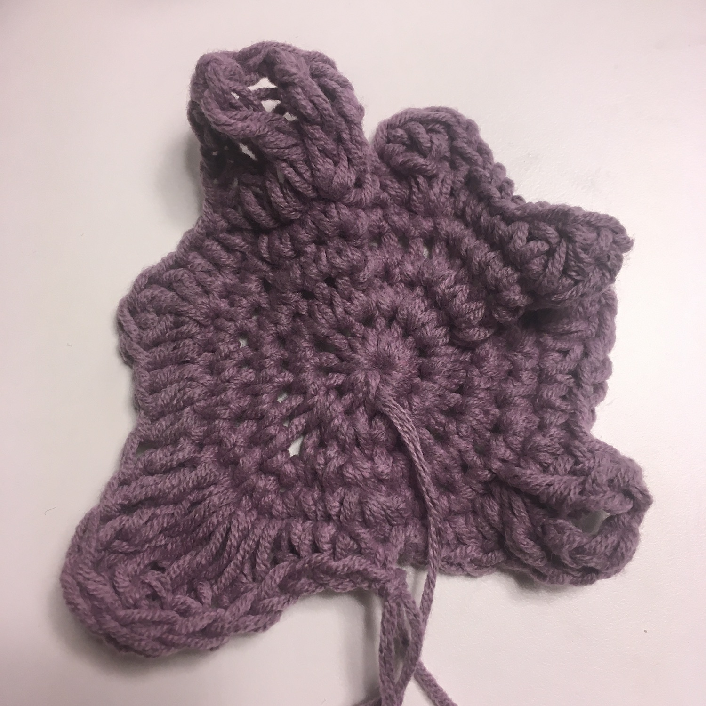
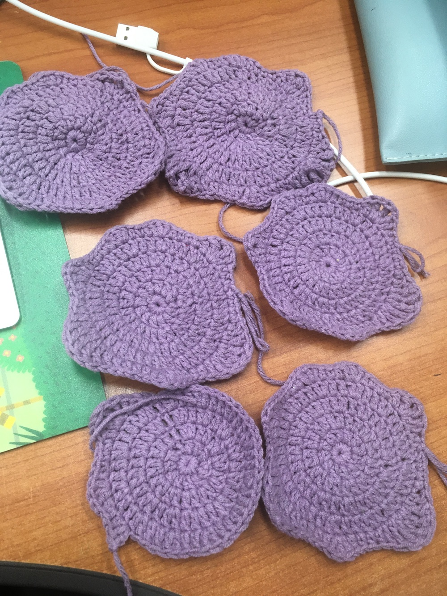

메타몽 나무위키 문서를 정독했다. 재밌는 이야기가 꽤 많았다.
메타몽의 영어 이름은 Ditto라고 한다! Ditto의 뜻이, 앞선 것과 동일함을 의미한다고 한다. 뉴진스디토보유국에서 이런 사실을 모르고 살았다니….
메타몽의 어원은 메타몰포시스Metamorphosis? 매트릭스에서 봤던 단어인 것 같다.
메타몽끼리 만나면 더욱 격렬해지는 면이 있다고 한다. 지지 않으려고….
메타몽은 무성. 교배로는 안나옴.
메타몽은
변신은 완벽하지만 비웃음을 당해 힘이 빠지면 변신이 풀려버리고 만다.
본 적이 있는 것으로 변신한다. 단 눈앞에 없는 것으로 변신할 때는 기억에 따르기 때문에 실패하기도 한다.
뭐든지 변신할 수 있지만 메타몽마다 잘하는 변신과 잘 못하는 변신이 있다고 한다.
어떤 포켓몬으로든 변신할 수 있는 남다른 개성을 가진 포켓몬. 설정상 포켓몬뿐만 아니라 사물, 인간으로도 변신할 수 있다.
스기모리 켄과의 인터뷰에서 밝혀진 모티브는 스마일 아이콘. 서양식 이모티콘 :) 로 추정된다.
메타몽은~메타몽은~메타몽은~
-
처음 뜨개모임을 하게 됐을 때 사실 아무 생각이 없었는데, 뭘 뜰지도 별 생각이 없었고, 같이 모임하게 된 분이 메타몽 수세미를 뜨고 싶다고 도안을 들고 오셔서 오호 했었다. 메타몽 수세미! 메타몽을 뜨게 되다니!
메타몽은~ 메타몽에게 미안할 정도의 첫 번째 메타몽을 완성하고, *변명해보자면 짧은뜨기 연습 시기라서 원래 도안의 한길긴뜨기를 다 짧은 뜨기로 떠버려서 이렇게 된 거다.
홀린 듯이 남은 실로 메타몽을 가능한 만큼 모두 떠버렸다. 메타몽의 핵심은 눈과 입매인데 그건 달아주지 않았다. 귀찮아서~
메타몽 인형도 선물 받고 메타몽 반지도 있고 내 손으로 뜬 메타몽코스터인지 뭔지도 집에 몇장 생겨버렸다.
메타몽이 변신 기술이 있는지, 괴짜 기술이 뭔지도 알아버렸다.
메타몽메타몽메타몽
메타몽을 그만 생각해,라고 하면 아무래도 계속 생각하게 되는 [메타몽을 생각하지 마] 이론이 있는데
메타몽을 그만 생각할 필요는 없다. 계속 생각해도 괜찮겠지요~